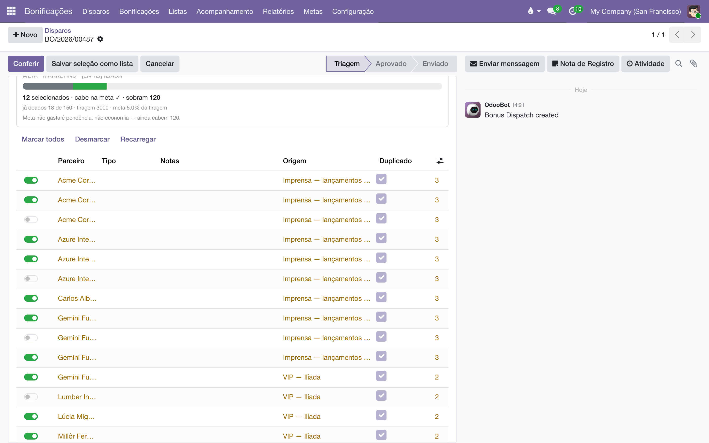
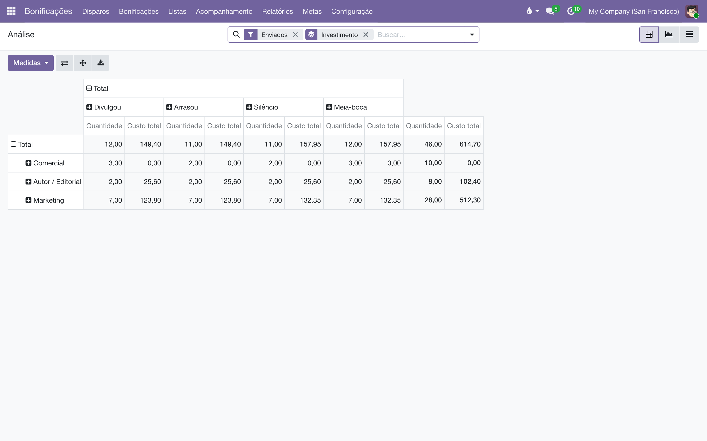

Bonificação
Exemplares de cortesia para autores, imprensa e influenciadores — cada envio com dono, motivo, custo e retorno, dentro de uma meta que a casa mesma define.
Visão geral
Dar um livro não é "toma aí um livro". O mesmo jornalista recebe todo lançamento, o autor tem direito aos exemplares do contrato, e mandar 40 livros para a imprensa pode render mais do que um anúncio — mas só dá para afirmar isso com número. O módulo de Bonificação registra as duas metades dessa conta: o custo de cada envio e o retorno que ele trouxe.
Os conceitos que aparecem nas telas:
- Disparo (numerado
BO/2026/00007) — a decisão de marketing: "mandar este título para esta gente". É aprovado uma vez e é a unidade que se compara com mídia paga ("47 livros, R$ 580" contra "um anúncio, R$ 4.000"). - Bonificação (a ficha, numerada
B00231) — um envio para uma pessoa. Cada ficha tem endereço, pacote no depósito e nota própria. Um disparo para 47 pessoas gera 47 fichas. - Motivo — por que o livro está saindo (Imprensa, Influencer, Lançamento, Exemplares de autor…). Cada motivo aponta para um dos três investimentos: Autor/Editorial, Marketing ou Comercial. É o investimento que diz qual verba paga e em qual meta o envio conta.
- Meta de doação — o percentual da tiragem que cada investimento pode doar. A tiragem não se cadastra: é a soma do que entrou em estoque do título.
- Lista VIP — um cadastro de destinatários com dono, história e gasto acumulado. Não é uma etiqueta em contatos: a lista sabe quem entrou, quando, por quem, e quanto já custou.
O módulo conversa com o resto do sistema: a expedição sai pelo aplicativo Estoque (operação própria BON/), a nota é uma nota de remessa no diário REM/ (com valor, sem cobrança), e a NF-e emitida volta pela importação de XML, casada pela chave de acesso.
Este módulo não emite NF-e. Ele prepara e coordena: gera a nota interna de remessa e aguarda o XML da NF-e emitida fora do sistema, que é conciliado pela chave de 44 dígitos.
Configuração
As definições do módulo ficam em (visível para administradores; a mesma página aparece no Definições geral do Odoo, seção Bonificações). Lá se configura:
- Quanto da tiragem pode ser doado — um percentual por investimento (Autor / Editorial, Marketing, Comercial), com o Total calculado ao lado. Vale para todos os títulos; a exceção por título fica em .
- Quando ligar para confirmar chegada — dias após a expedição para a bonificação aparecer na lista de Retorno.
- Score do parceiro — quantos pontos vale cada resultado (Silêncio, Meia-boca, Divulgou, Arrasou), quantas avaliações a pessoa precisa ter para sair do "em teste" e em quantos meses uma avaliação antiga passa a valer metade.
- Configuração fiscal — a Posição fiscal da nota de remessa (precisa ter a baixa automática configurada: a nota de bonificação nunca gera pagamento) e o CFOP de bonificação (5910/6910). Sem esses dois campos o botão Gerar nota recusa, dizendo exatamente o que falta.
Também em Configuração:
- — o cadastro de motivos. Cada motivo tem o investimento, a janela de retorno em dias (Influencer 21, Imprensa 120…), se exige aprovação e se consome exemplares do contrato. O módulo já vem com Exemplares de autor, Imprensa, Influencer, Lançamento e Amostra para livraria.
- — etiquetas coloridas para organizar as listas (imprensa, poesia, SP…).
Grupos de acesso (na ficha do usuário, seção "Bonus Copies"): User opera o dia a dia; Administrator pode, além disso, liberar envios que estouram a meta — e a liberação fica registrada no documento.
Os percentuais padrão já valem para todo título desde o primeiro dia. Só crie uma linha em quando um livro específico merecer uma meta diferente da casa.
Montar e cuidar das listas VIP
As listas moram em . Cada lista tem um Dono (quem responde por ela), Etiquetas, uma Meta própria, o Gasto acumulado, a Avaliação ("19 de 58" — quantos envios renderam) e o Último envio — a coluna que diz quais listas esfriaram.
Há três portas para colocar gente numa lista:
- Na aba Membros da lista, acrescente contatos um a um na própria tabela — ou use o botão Adicionar vários contatos.
- A partir de Contatos: filtre como quiser (etiquetas, cidade, busca), selecione vários e use . É a porta com os melhores filtros. Rodar duas vezes com a mesma seleção não duplica ninguém — quem já estava é ignorado, quem tinha saído volta.
- Importando uma planilha (abaixo).
Tirar alguém da lista é desligar o botão Ativo na linha do membro. A pessoa não é apagada: a data de saída fica registrada em Saiu em, porque a lista é história, não só o estado de hoje.
Importar uma planilha
- Abra (ou o botão Importar planilha na aba Membros de uma lista).
- Baixe a Planilha de exemplo que aparece na própria tela — ela traz os cabeçalhos certos e uma aba "Como usar".
- Suba o arquivo (
.xlsxou.csv). A ordem das colunas não importa e o importador reconhece variações comuns de cabeçalho (Contato, Celular, Veículo…). Só Nome ou E-mail é obrigatório. - Escolha a Lista de destino — ou deixe vazio, se a planilha tiver uma coluna Lista: nesse caso um arquivo só alimenta quantas listas quiser, e a lista que não existir é criada.
- Clique em Conferir. A prévia diz o que vai acontecer — quantos contatos já existem na base, quantos serão criados, repetidos, sem endereço — antes de gravar qualquer coisa.
- Clique em Importar.
O importador casa as pessoas pelo e-mail (e pelo nome exato, se você deixar Casar por nome quando não houver e-mail ligado), justamente para não criar duzentos cadastros duplicados — uma lista de imprensa quase sempre é gente que já está na base. O que já foi digitado no contato não é sobrescrito pela planilha. Desligando Criar quem não existe, a importação só vincula quem já está na base e relata os demais.

Combinar listas
- Em , marque duas ou mais listas.
- Use .
- Escolha o modo — União (todo mundo), Interseção (só quem está em todas) ou Diferença (a primeira, menos as outras) — e veja a prévia com a sobreposição ("37 pessoas estão em mais de uma lista").
- Decida o destino das originárias: Manter, Arquivar (somem do seletor, o histórico fica) ou Apagar.
Apagar as listas de origem só é aceito quando elas nunca bonificaram ninguém. Uma lista que já mandou livro é registro, não lixo — o sistema recusa e sugere arquivar. E a nova lista guarda a procedência: de quais listas veio e por qual modo.
Para enviar uma campanha a três listas não é preciso combiná-las: o disparo aceita várias listas de uma vez e não duplica ninguém. Combine apenas quando o cruzamento vai se repetir ("Imprensa de poesia" = imprensa literária ∩ etiqueta poesia).
Disparar uma campanha (a triagem)
O coração do módulo é a tela de triagem, em :
- Crie um disparo e preencha Título, Exemplares por pessoa, Motivo e, se quiser, Campanha (o lançamento, a feira).
- Escolha de onde vem a gente. As quatro fontes somam — não são alternativas: Listas (uma ou várias), BO (quem recebeu num disparo anterior — "mande para quem ganhou o último livro"), Etiquetas de contato e Contatos a dedo ("o autor pediu mais um"). Quem aparece em duas fontes recebe um livro só, e um resumo mostra a conta: "22 nomes, 7 repetidos, 15 candidatos".
- Faça a triagem na tabela: cada linha é um candidato com as colunas que respondem "vai ou não vai?" — Notas (quem a pessoa é), Origem (de qual fonte veio), Duplicado (já recebeu este título — essas linhas já vêm desmarcadas), Envios, Score, Último e End. (tem endereço utilizável). Os botões Marcar todos / Desmarcar ajudam nos extremos.
- Acompanhe o contador de meta, que se move enquanto você marca: quantos selecionados, se cabe na meta, quanto sobra. Se estourar, ele diz em quantos exemplares — e que um gestor pode liberar.
- Clique em Conferir: sai um relatório do que está torto e do conserto — quem está sem endereço (sem CEP não sai etiqueta), quem já recebeu o título, a meta, o estoque disponível e o custo total ("quanto custaria o anúncio equivalente?").
- Clique em Aprovar. A aprovação é uma, do disparo — não 47, uma por pessoa. Nesse momento nasce uma bonificação (ficha B) para cada selecionado com endereço.
- Clique em Enviar tudo para liberar todas as fichas para a logística de uma vez.
Uma boa triagem pode virar patrimônio: o botão Salvar seleção como lista transforma os marcados numa lista VIP nova. E o próprio disparo já serve de fonte para o próximo — raramente é preciso congelar campanha em lista permanente.

A bonificação, passo a passo
Cada envio individual vive em e percorre a escada Rascunho → Aprovado → Enviado → Chegou → Encerrado (com o desvio Não chegou). Uma bonificação também pode ser criada avulsa, sem disparo — o caso típico dos exemplares de contrato do autor.
- Aprovar — dispensável para motivos que não exigem aprovação (Exemplares de autor: o contrato já aprovou quando foi assinado; o sistema registra isso no histórico).
- Enviar para logística — verifica a meta, congela o custo unitário e cria a expedição
BON/no Estoque, já confirmada e reservada. O livro ainda não saiu: o depósito precisa separar, embalar e validar a expedição no aplicativo Estoque, como qualquer entrega. O botão MOV na ficha mostra o estado do pacote. - Gerar nota — cria a nota de remessa no diário
REM/: uma nota com valor comercial que é baixada automaticamente ao ser lançada — nunca gera cobrança. Exige a posição fiscal e o CFOP configurados nas Definições. O botão Nota mostra o número (ou "A emitir"). - Quando a NF-e for emitida (fora do sistema) e importada, cole a Chave da NF-e (44 dígitos) na aba Nota e logística — o painel do XML é encontrado sozinho pela chave — e clique em Confirmar nota para conciliar. O Estado da nota percorre A emitir → Emitida → Conciliada.
- Chegou / Não chegou — o fecho do ciclo físico (ver Acompanhamento, abaixo).
Dois números convivem no mesmo envio, de propósito: a nota sai a valor comercial (é o que o fisco quer ver) e o custo das linhas da bonificação é o caixa que saiu (impressão, papel) — congelado no envio, para que o histórico de 2026 não mude quando a próxima tiragem mudar o custo. Um não vira o outro.
Acompanhamento: chegou? rendeu?
Custo é metade da conta; o retorno é a outra metade. Duas telas de trabalho, em :
Retorno — confirmar a chegada
- Abra . Passados os dias configurados nas Definições, quem foi expedido e não confirmou chegada aparece aqui — com o telefone na linha, porque a tarefa desta tela é ligar e perguntar se o livro chegou.
- Na própria linha, clique em Chegou ou Não.
- Depois de uma leva de ligações, dá para selecionar várias linhas e usar — só as enviadas mudam de estado.
Se o livro não chegou, a falha é do correio, não da pessoa — o registro diz isso explicitamente e o extravio não conta contra o destinatário. O botão Reenviar cria uma bonificação nova, mesma pessoa, mesmo título; a perdida fica perdida.
Avaliações — registrar o que rendeu
- Abra : os envios que chegaram e ainda não foram julgados.
- Um clique na linha: Silêncio, Meia-boca, Divulgou ou Arrasou. A data e o autor da avaliação são carimbados sozinhos e a bonificação encerra.
- Cole o Link do post, resenha ou vídeo: "divulgou" sem link é opinião; com link é fato — e daqui a dois anos alguém clica em vez de confiar na memória de quem já saiu da empresa.
Aguardando não é silêncio. Cada motivo tem sua janela de retorno (um influencer posta em uma semana ou nunca; um crítico de jornal leva meses). Enquanto a janela não fecha, o envio aparece como "aguardando" — ninguém é julgado antes da hora.
O Score do contato
Na ficha do contato (aba Bonificações) e nas telas de triagem e listas, cada pessoa carrega um Score de 0 a 13 com uma seta de direção (↑ → ↓): a média dos resultados, pesando mais o recente. Dois símbolos dizem "ainda não há nota": ⚘ nunca recebeu (um convite, não um demérito — é assim que a casa descobre gente) e ⚗ em teste (recebeu pouco; amostra de 1 não é avaliação, é sorte). A Situação resume em palavras: Novo, Em teste, Sem retorno, Esfriando, Constante, Rendendo. Os pontos e cortes são os das Definições, e um serviço noturno mantém os scores atualizados com o passar do tempo.
Metas de doação
Em ficam as exceções por título: para cada título × investimento, o % da tiragem permitido, e as colunas calculadas — tiragem, exemplares permitidos, já doados, restantes, % já doado. A tiragem é a soma das entradas em estoque (não o saldo, que cai conforme vende): uma reimpressão alarga a meta sozinha.
O que o sistema garante:
- O envio que estoura a meta é bloqueado com explicação: quanto era permitido, quanto já foi dado, quanto sobra, quanto o envio pede — e quem pode liberar.
- Um administrador de Bonificações pode liberar o estouro, e a liberação fica registrada no histórico do documento. O desbloqueio é informação, não exceção escondida.
- Título sem tiragem em estoque não trava nada: a meta é uma porcentagem da tiragem, e antes de o livro entrar não existe número para travar. O mailing de imprensa do lançamento não pode ser bloqueado por uma meta que ainda não é calculável.
- O número do contador da triagem e o número que bloqueia o envio saem da mesma conta — nunca discordam.
Relatórios
- — a tabela dinâmica que cruza Investimento × Tipo de parceiro × Resultado × Lista (e campanha, título, mês…), com exemplares e custo como medidas. É aqui que "pra que mandar?" vira número. A dimensão Situação no envio é congelada na hora do envio — dá para perguntar "quanto apostamos em quem já estava frio?" sem que o presente reescreva o passado.
- — cada lista numa linha; expanda por contato para ver quem está nela, ou as colunas por lista para ver quem se repete entre duas.
- — cada contato e em quantas listas está, ordenado por isso. Serve para achar quem recebe tudo (e talvez não devesse) e para denunciar listas redundantes — quando as mesmas trinta pessoas aparecem juntas em oito listas, as oito são a mesma lista com nomes diferentes.

Perguntas frequentes
Marquei uma pessoa e ela apareceu desmarcada na triagem. Por quê?
Ela já recebeu este título antes (coluna Duplicado). A triagem desmarca por padrão para evitar livro repetido, mas você pode marcar de novo — é aviso, não proibição.
Aprovei o disparo e uma pessoa da lista ficou de fora.
Provavelmente sem endereço completo (rua, cidade e CEP). Sem os três o pacote não sai do depósito, então a ficha não é gerada. Complete o cadastro e use Recarregar na triagem.
Enviei para a logística, mas o estoque não baixou.
Certo: enviar libera a expedição — reserva o livro. A baixa acontece quando o depósito valida a operação BON/ no aplicativo Estoque. O botão MOV da ficha mostra em que pé está.
O botão "Gerar nota" reclama de mapeamento fiscal.
Falta a Posição fiscal da nota de remessa (com a baixa automática e sua conta) ou o CFOP em . O aviso diz qual dos dois.
Onde vejo as notas de bonificação?
No menu de Remessas do Faturamento, junto com as demais notas de movimentação — há um filtro "Bonificações". Da própria nota, o botão Bonificação volta para a ficha que a gerou.
A tela Retorno está vazia.
Ela só mostra quem foi expedido há mais dias do que o configurado em Quando ligar para confirmar chegada e ainda não confirmou. Vazia significa: ninguém para ligar hoje.
Posso marcar "não mandar mais" para alguém?
Não por aqui — de propósito. O histórico (22 livros, zero retorno) está na ficha do contato para informar essa decisão, mas riscar alguém da lista para sempre é uma decisão editorial e de relacionamento, não um lançamento de bonificação.
- Notas de remessa — o diário REM/ e a baixa automática que a nota de bonificação usa.
- Importação de XML de NF-e — por onde a NF-e emitida volta ao sistema e é casada pela chave.
- Orçamento — para acompanhar a verba de marketing que as bonificações consomem.